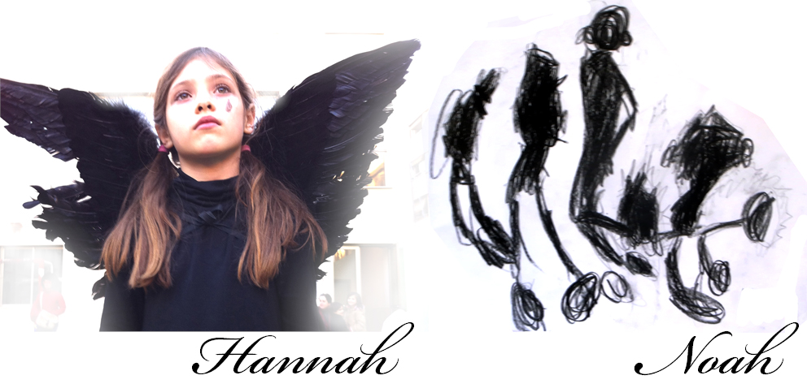
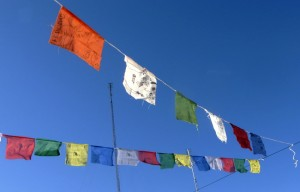
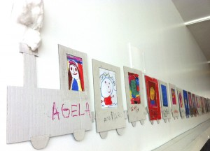
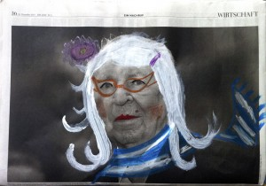
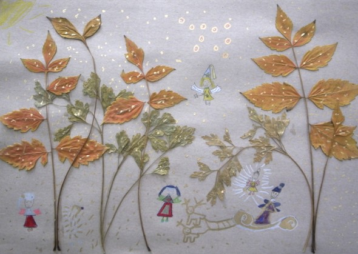
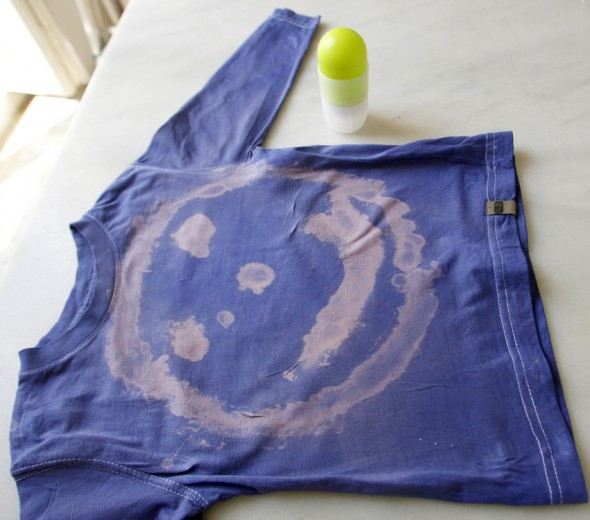

Hannah als Engel und eine Zeichung über Körperformen von Noah.
Das könnte dir auch gefallen

Aktivität
Traumfahnen
Wir haben unsere eigenen Fahnen gemacht, so dass der Wind nun unsere Wünsche irgendwo mit hinnehmen kann. Wir haben nur ein paar farbige Stoffe mit wasserbeständigen…
Weiterlesen →
Aktivität
Zug
Zug: Heute haben Roser und ich Portraits mit der Klasse con Noah und Bruna gemacht, diese haben wir dann wie Wagons hintereinander aufgehängt .
Weiterlesen →
Aktivität
Zeitungen
Zeitungsbilder anmalen Vielleicht sieht das etwas banal aus, aber wenn Du diese Aktivität noch nie mit Kindern gemacht haben solltest, solltest Du es ausprobieren... Es macht…
Weiterlesen →
Aktivität
Veränderter Maßstab
Veränderter Maßstab: In diesem Fall sind die Blätter die Bäume. Waldfeen.
Weiterlesen →
Malen
Gesichter
Mit Bleichmittel kann man tolle Bilder auf Stoffe malen. Das funktioniert mit Pinsel, aber für Kinder ist es besser die Flüssigkeit in einen Leeren Deodorant zu…
Weiterlesen →